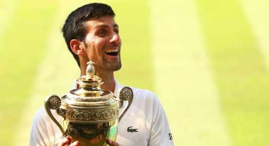
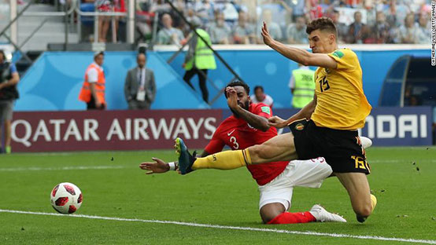
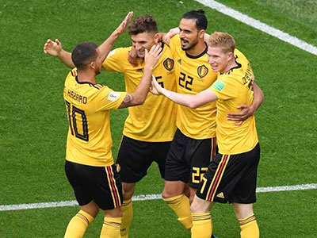
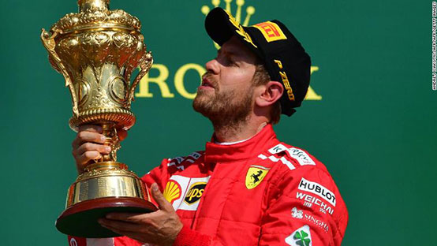
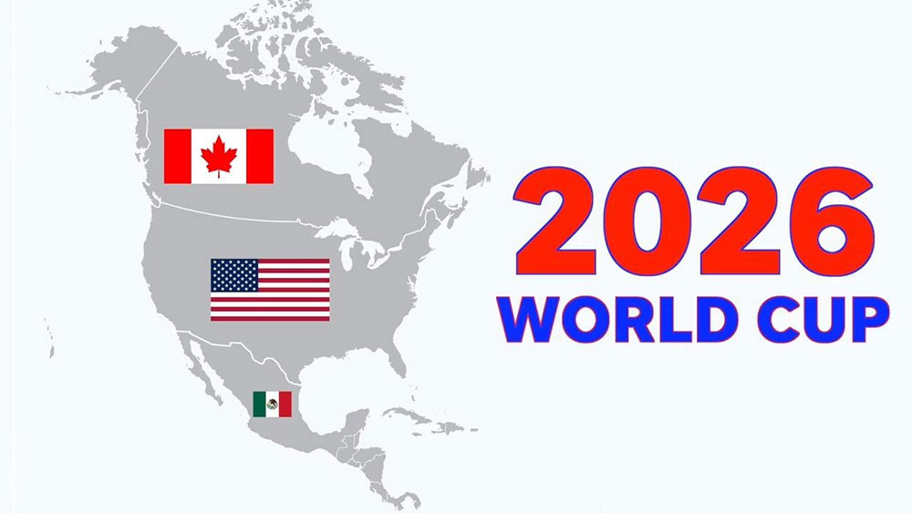
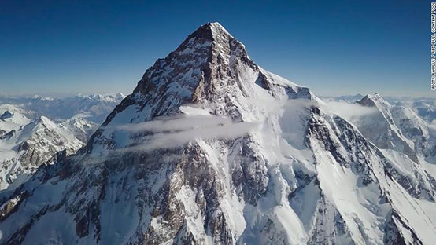
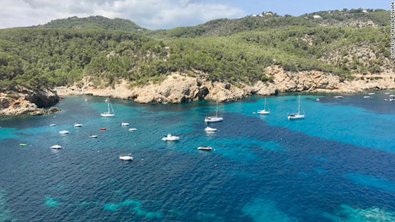
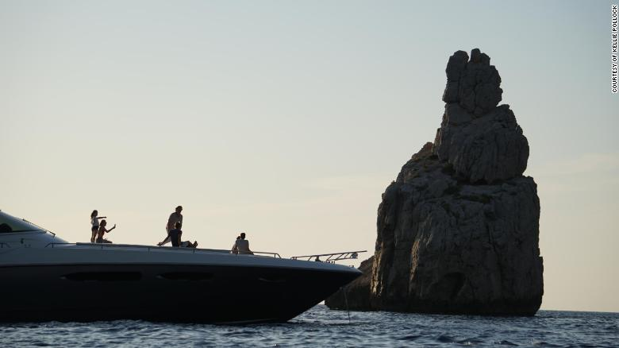

Sport
Novak Djokovic wins fourth Wimbledon by beating Kevin Anderson

Novak Djokovic earned his first Grand Slam title in more than two years by beating Kevin Anderson to win his fourth Wimbledon championship.
Djokovic, seeded 12th, won 6-2 6-2 7-6 (7-3) to claim a 13th Slam - his first major since the 2016 French Open.
The Serb, 31, quickly took control to win the opening set in 29 minutes, breaking twice more in the second set.
Djokovic saw off five set points in an even third set before dominating the tie-break to seal victory.
He dropped to his haunches just inside the baseline as Centre Court rose to acclaim the champion, hugging South African Anderson at the net before skipping over towards his box and celebrating wildly in front of his coaching team and wife Jelena.
"I had many moments of doubt, I didn't know if could come back to this level to compete," said Djokovic, who also won the Wimbledon title in 2011, 2014 and 2015.
"There is no better place to make a comeback, it's a sacred place for the world of tennis, it's very special."
He is now in outright fourth place on the all-time list of Grand Slam men's singles titles, moving clear of Roy Emerson and closing the gap on Roger Federer (20), Rafael Nadal (17) and Pete Sampras (14).
The former world number one will move back into the top 10 when the latest rankings are released on Monday.
It is his first title since winning Eastbourne last year.
Djokovic back to his Slam-winning best
Djokovic dominated the men's game earlier this decade, holding the number one ranking for 223 weeks and completing a career Grand Slam when he claimed the title at Roland Garros two years ago.
Then, his cloak of invincibility began to slip.
After losing to Sam Querrey in the third round of Wimbledon in 2016, Djokovic alluded to difficulties in his personal life and his form subsequently tailed off.
Fitness also became an issue, taking two spells away from the ATP Tour because of an elbow injury, leading to him dropping out of the world's top 20 earlier this year for the first time since 2006.
Now he is back among the world's elite after a wonderful Wimbledon.
Djokovic broke twice in each of the opening two sets, dismantling 6ft 8in Anderson's service game and grinding him down in the rallies.
Anderson rarely ventured forward and offered little variation - until the third set at least - but Djokovic nullified the increased threat to win in two hours and 18 minutes.
Belgium records best World Cup finish with victory over England

Having previously contested the match no team wanted to win, Belgium and England now squared up in the match neither side wanted to play.
When these two teams last met, the outcome would determine which would finish top of Group G and consequently navigate the so-called 'harder' route to the final.
The loser, however, would find itself on the easier side of the draw, avoiding the likes of Brazil, Argentina and France.
In the end, the route to the final mattered little and both sides, having lost in their respective semifinals, found themselves in Saint Petersburg to contest the maligned third-place play-off, with Belgium coming out on top thanks to goals by Thomas Meunier and Eden Hazard.
Blistering start
Perhaps the players would have preferred to be on holiday after a long season, but it didn't show in what was a blistering start to the game.
England appeared to be dominating before a typically piercing Belgium counterattack saw Nacer Chadli square the ball for Meunier to tap in at the far post in the fourth minute.
Managers Gareth Southgate and Roberto Martinez had provided the pre-match fighting talk, pointing out that both sides could yet make their own history.
Third place for England would have been the nation's second-best performance at a World Cup, and the best on foreign soil.
"We'll either go home having shown improvement and equaled every team that has left our shores," Southgate told ITV before the match.
"Or we put in a performance and go home with a medal and become the best ever team to have left our shores."
Third place for Belgium, meanwhile, would have been its highest finish in World Cup history.

After Meunier's opening goal, Belgium looked the more motivated, while everything England did appeared to be lethargic.
In midfield, Kevin De Bruyne and Hazard ran the show, splitting England's defense apart at will.
Chances for Romelu Lukaku and another for Meunier came and went and England looked relieved to hear the half-time whistle, which prevented another Belgium corner.
When the teams emerged after the restart, England -- with the introduction of Jesse Lingard and Marcus Rashford for Danny Rose and Raheem Sterling -- gradually got a foothold on the game.
By the time the final 20 minutes came around, Belgium were hanging on for that bronze medal.
After some intricate passing on the edge of the area, Eric Dier had his effort cleared off the line by Tottenham teammate Toby Alderweireld, before Thibaut Courtois smothered Harry Maguire's header.
But Belgium still posed a danger and another scintillating counterattack, arguably its best of the tournament so far, ended with Jordan Pickford producing a stunning save to deny Meunier his second.
In the end, it was another counterattack which finished England off and it was the match's two outstanding players who produced it.
De Bruyne's threaded pass found Hazard in behind England's defense and the Chelsea man slotted the ball inside Pickford's near post.
There were to be no goals for a quiet Harry Kane but the striker's six goals look to be enough to win the golden boot, with only Antoine Griezmann and Kylian Mbappe -- both on three -- within reach ahead of Sunday's final.
It was an anticlimactic way for both these teams -- which have given their fans some thrilling moments in Russia -- to end the World Cup, but Belgium's 'Golden Generation' leave with bronze and a deserved piece of history.
Daniel Ricciardo: 'This year's F1 champion will feel more fulfilled'

He may be some way off the Championship leaders but Daniel Ricciardo believes this year's F1 title race is the most exciting it's been for years.
As the season nears its halfway stage and the teams take a collective deep breath following the sport's first-ever triple header, the Red Bull driver finds himself in fourth place, 65 points behind Ferrari's Sebastian Vettel.
The Australian knows the odds are firmly stacked against him bridging the gap, particularly when he and teammate Max Verstappen "take too many points away from each other."
But equally he believes the days of one team dominating are over, and that can only be a good thing for a sport.
"It's been a bigger battle," Ricciardo told CNN The Circuit at Silverstone.
"I'll use Lewis [Hamilton] as an example but let's say any Mercedes driver in the last five years -- the fight has just been with them and their teammate.
"Sure, maybe me, Max [Verstappen] or Seb [Vettel] has taken a win here or there. But I think this year is going to be more rewarding.
"Whoever wins the title -- even if it's Lewis again -- I think he'll feel more fulfilled."
Mercedes duo Hamilton and Nico Rosberg won 19 of the 21 races in 2016 -- the German marque taking the Constructor's Championship by a whopping 297 points.
By contrast, after 10 Grands Prix this season, four different drivers have already topped the podium -- Hamilton, Vettel, Verstappen and Ricciardo all getting in on the action.
Even if the latter doesn't end up doing any more trademark shoeys, he's confident F1 is moving in the right direction.
The state of soccer in the US with 2026 World Cup on the horizon
More than 5,000 miles away from the World Cup final in Moscow's Luzhniki Stadium, thousands of fans filed into the Mercedez-Benz Stadium -- home of Atlanta United FC.
But this was still hours before Atlanta faced the Seattle Sounders, yet more than 20,000 fans were brandishing French flags and checkered Croatia kits.
Stadium lights flashed and goal horns blared every time a player back in Moscow found the back of the net and as the final whistle blew, Les Bleus fans celebrated with euphoria.
It was a taste of what is to come in eight years, with Atlanta likely to become one of the cities to play host to the 2026 World Cup -- an event and a moment that United States soccer and Major League Soccer can't wait for.
"Most countries can only dream of something like this," Carlos Cordeiro, the president of US Soccer, told CNN.
The 2026 World Cup will be the first time 48 teams will play a combined 80 matches in three different countries -- with 60 of those in the US and 20 split evenly between Canada and Mexico.
"It is transformational," Cordeiro said. "It is everything we think it will be and we're only a few weeks into planning it."
Budding in popularity
In September 2014, when Darren Eales was appointed president of Atlanta United, few could have predicted the kind of support the MLS' 22nd franchise would immediately have.
Much to Eales' pleasant surprise, after less than two full seasons of play, Atlanta is on pace to be the league's leader in attendance for the second consecutive season.
In September 2014, when Darren Eales was appointed president of Atlanta United, few could have predicted the kind of support the MLS' 22nd franchise would immediately have.
Much to Eales' pleasant surprise, after less than two full seasons of play, Atlanta is on pace to be the league's leader in attendance for the second consecutive season.
"We've created an energy and a passion that rivals anywhere in the world," Eales told.
Atlanta's passion reflects soccer's budding popularity in the US. A Gallup poll from December 2017 notes that soccer is more popular among those aged 18-34 than baseball and equal in popularity to basketball.

According to the United 2026 Bid Book, there are almost four million youth soccer players in the US. And, as a result of youth interest, Cordeiro believes that within the next two decades, soccer will be the "preeminent sport" in the US.
"I think it's going to be really amazing to have that tournament in our country, in North America," star US striker Christian Pulisic told CNN. "Just to grow the sport, grow the culture in this area of the world."
Not as bad as expected?
During the final qualifying round for the Confederation of North, Central American and Caribbean Association Football (CONCACAF) in mid-October 2017, many soccer pundits expressed dismay at the performance of the US men's national soccer team (USMNT) after it fell 2-1 to Trinidad and Tobago and missed the 2018 World Cup in Russia.
That loss and resulting failure to qualify for this year's tournament led to wholesale changes within the US men's soccer program.
USMNT head coach Bruce Arena resigned just days after the defeat, while Sunil Gulati announced he wouldn't seek re-election as US Soccer's president in December.
Cordeiro replaced Gulati a few months later and immediately looked to revamp the federation's technical structure. From August 1, Philadelphia Union sporting director Earnie Stewart will officially help with that rebuilding process as he becomes the USMNT's first-ever general manger.
The world's first ski descent of K2

High-altitude adventurer Andrzej Bargiel has become the first person to ski down from the summit of K2, descending from the world's second-highest mountain on Sunday.
Bargiel cruised down from the Pakistani peak -- which stands at 8,611 m (28,251 ft) -- in a swift seven hours, having topped out on the summit after three and a half days of climbing without the aid of supplementary oxygen -- a feat unto itself.
"I have managed to ride down from the summit of K2, directly to the base camp. It's a very technical descent, leading down the middle of the face, so I'm very happy it turned out well, because I'm here for the second time, and I'm glad I don't have to come back," said Bargiel.
The 30-year-old daredevil from Poland attempted to ski down K2 last year, but was forced to abort the attempt because of high temperatures and poor conditions.
But with favorable conditions yesterday, Bargiel was able to breeze from the summit to base camp.
'Savage Mountain'
K2 is located on the Pakistani-Chinese border within the Karakoram Range -- a mountain chain that spans India, Pakistan, and China, and is home to the greatest concentration of high mountains in the world.
The peak is renowned among mountaineers for its difficulty and has been bestowed the moniker "Savage Mountain" as an ode to its unforgiving nature.
Compared to the more than 4,000 people that have summited Everest -- the world's tallest mountain at 8,848 m (29,029 ft) -- less than 350 people have stood on K2's peak since it was first topped out in 1954.
And while few have summited K2, many have perished in attempting the climb. The mountain has claimed 77 lives, giving it the second-highest fatality rate among mountains over 8,000 m, behind only Annapurna in Nepal.
Bargiel's descent forced the freerider to ski under huge seracs and navigate snow fields full of crevices en route to base camp.
Bargiel is known for previously attaining the "Snow Leopard" award -- a prestigious title given to mountaineers who manage to summit all the peaks in the former Soviet Union above 7000 m.
Seduced by the whims and charms of sailing the Mediterranean

Once you arrive in the Mediterranean Sea it is easy to understand why the Greek hero Odysseus took 10 years to find his way home.
Although there are no mythological nymphs, lotus eaters or sea monsters to delay your passage there is still much in this storied part of the world to seduce, bewitch and thwart.
When we first entered the Mediterranean via the Gibraltar Straits, we had planned to spend two years exploring its waters before continuing our journey around the world.
That plan was very quickly scuttled.
As many sailors claim, and as we have discovered ourselves, the wind in the Mediterranean is fickle. There is either too much, too little or it is right on your nose.
Fortunately, unlike Odysseus, most sailors can counter the whims of the wind Gods and simply turn on the engine -- which is what we did all the way from Gibraltar to Ibiza.
We were impatient to get to the islands, lured by postcard images of secluded coves in which you can drop anchor in waters the color of swimming pools.
One piece of paradise we came across was Cala San Miguel, on the west coast of Ibiza which boasts some of the most spectacular sunsets in the Mediterranean.
It sits just below Cala Benirras which is famous for the hoards of drummers who descend on its small slither of beach every Sunday to herald the end of the day.
As the sun descends, another sight to see in Benirras is a rocky outcrop at the cove entrance which looks uncannily like Queen Victoria on her throne.
Spending days in these protected anchorages is easy, taking the dinghy ashore for a sundowner at a beach bar and swimming off the back of the boat.
There is little incentive to leave other than the promise of hundreds of other idyllic coves you can find throughout the Mediterranean. Some of the most beautiful and isolated anchorages can be found in Sardinia.

For us, the most superb was Cala Luna in the Gulf of Orosei on the eastern side of the island.
This stunning stretch of coastline is famous for its caves, but is largely inaccessible from land.
During the day, it is crowded with tourist boats, but the patient sailor will be rewarded with an almost exclusive anchorage by sunset.
Cala Luna offered a welcome reprieve from the armada of boats that descend on the Costa Smeralda and La Maddalena Archipelago in northern Sardinia.
In the peak season, this is a playground for the jet set and the world's largest superyachts which anchor off-shore like floating luxury hotels complete with crew, chefs and other staff.
There are also countless other pleasure craft, all vying for space in the crystal blue waters throughout the Archipelago which is often described as the Caribbean without palm trees.
But the waters here can be perilous, scattered as they are with spectacular rock formations that have been sculpted by a weather system known as the Mistral.
We spent many days in marinas sitting out these strong north westerly winds that sweep down from southern France into the Mediterranean, gusting up to more than 70 kilometers per hour.
While it can be frustrating to be stuck ashore during bad weather, these delays have also proven opportunities to explore places we would never have visited had we not arrived by boat.